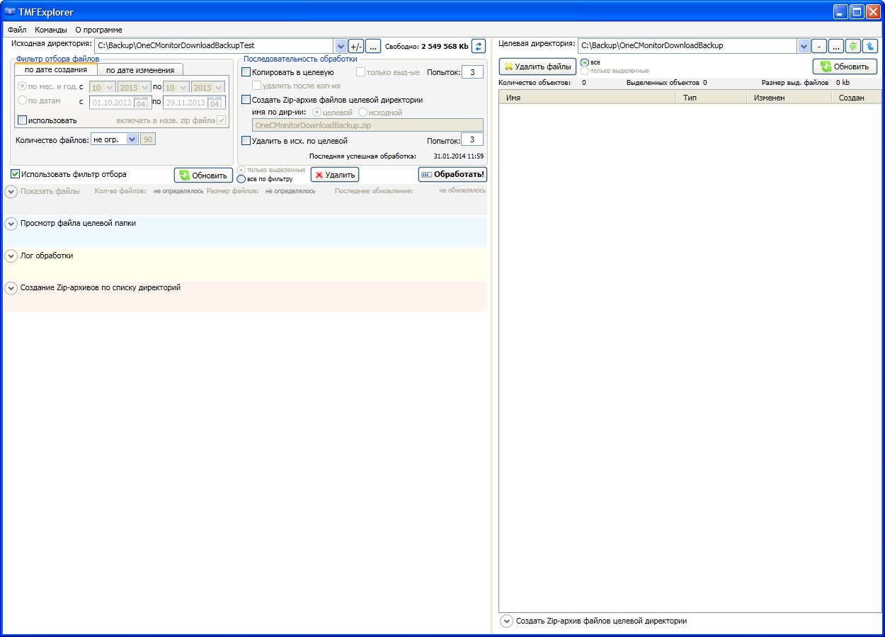
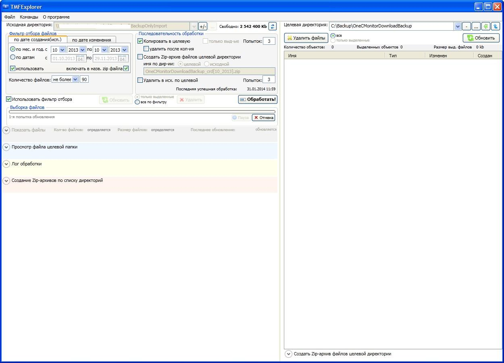
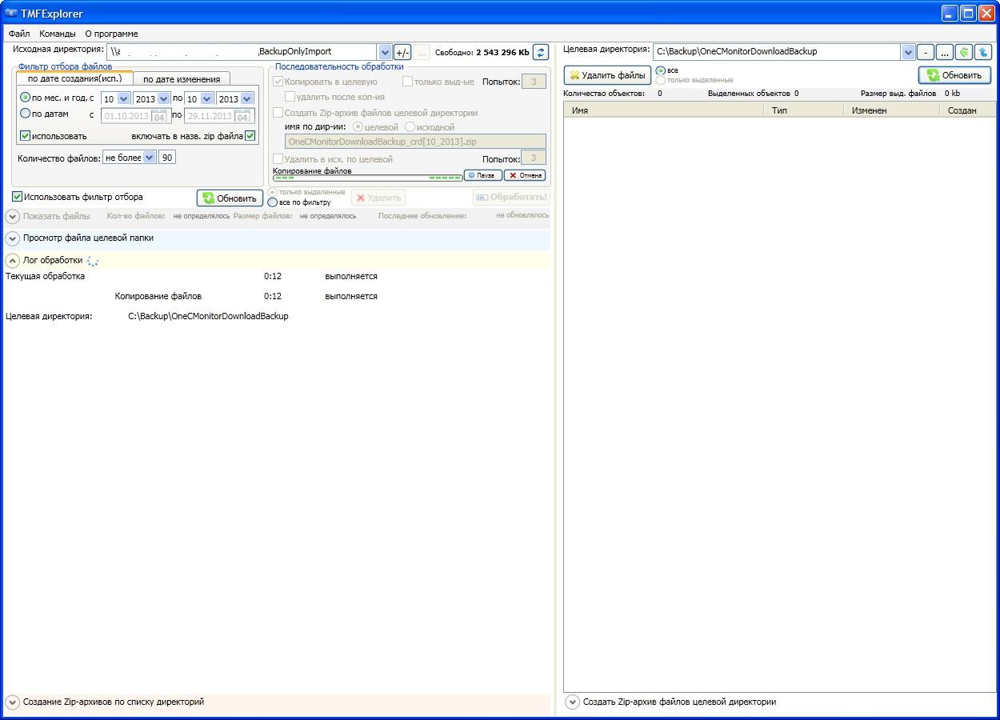
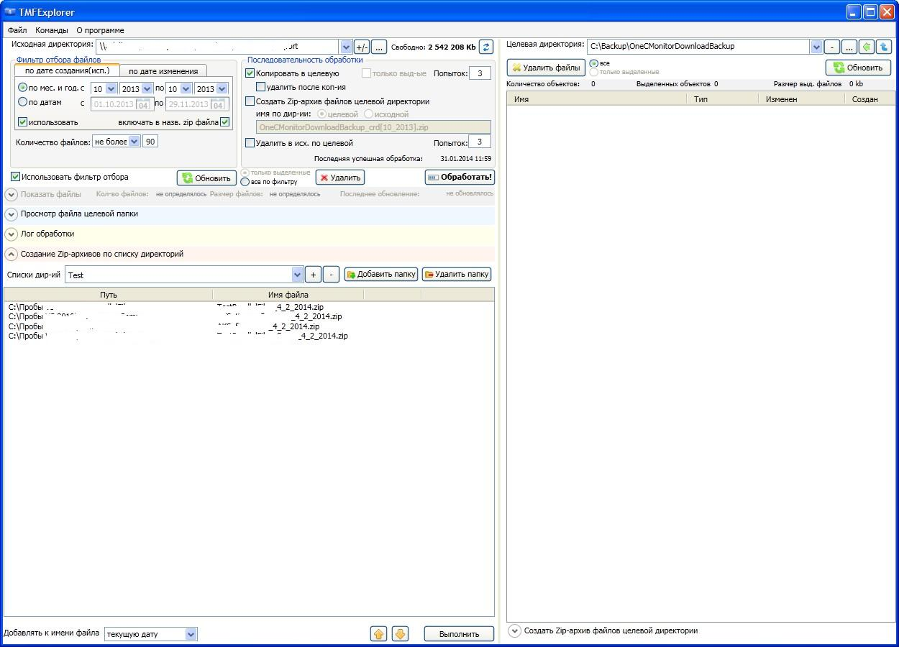
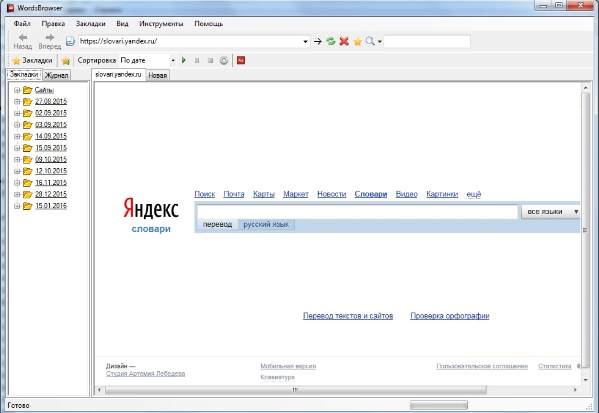
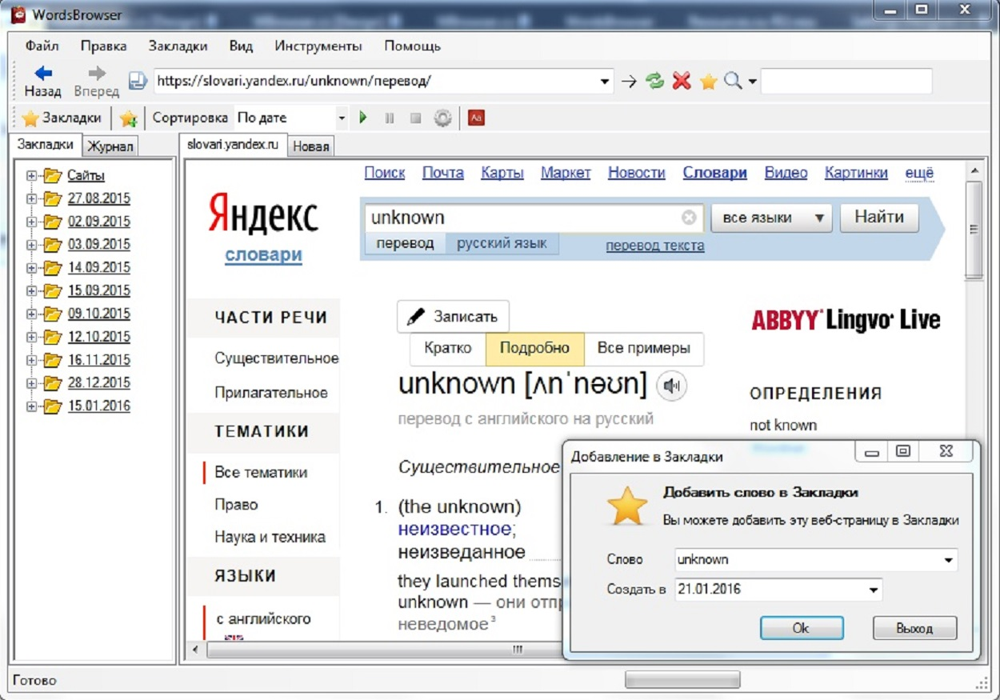
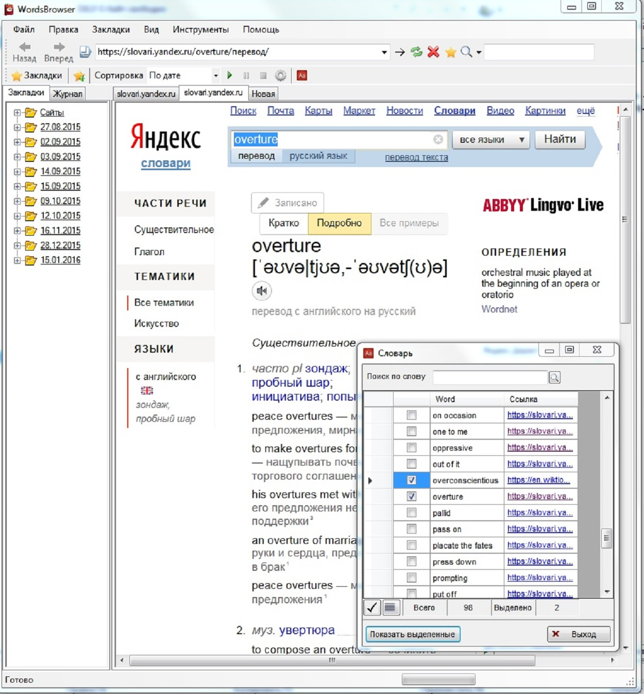
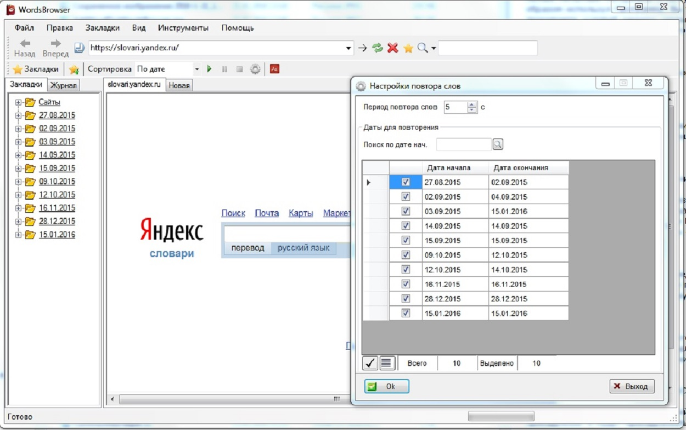
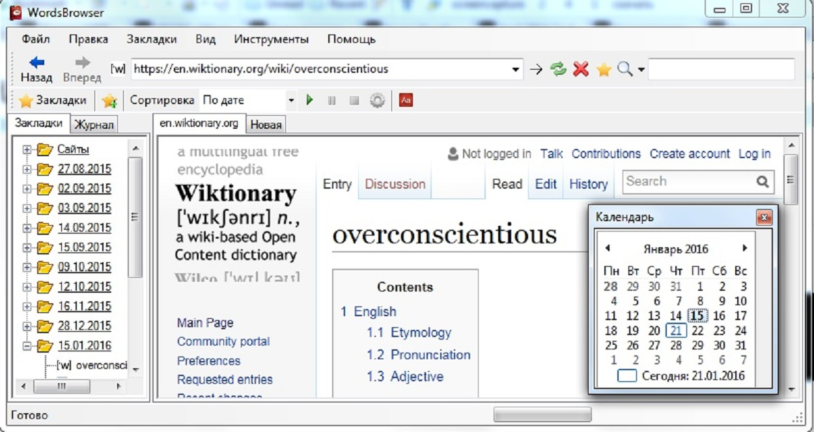

TMFExplorer
WordsBrowser
При открытии программы TMFExplorer 
При обновлении исходной директории 
При обработке исходной директории 
Создание Zip-архива по списку директорий 
С опцией создания Zip-архива целевой директории

При открытии программы WordsBrowser 
Добавление слова в Закладки 
Работа со словарем, открытие слов во вкладках 
Настройки повтора слов 
Навигация по датам с помощью Календаря 